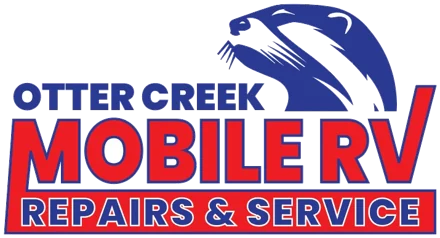
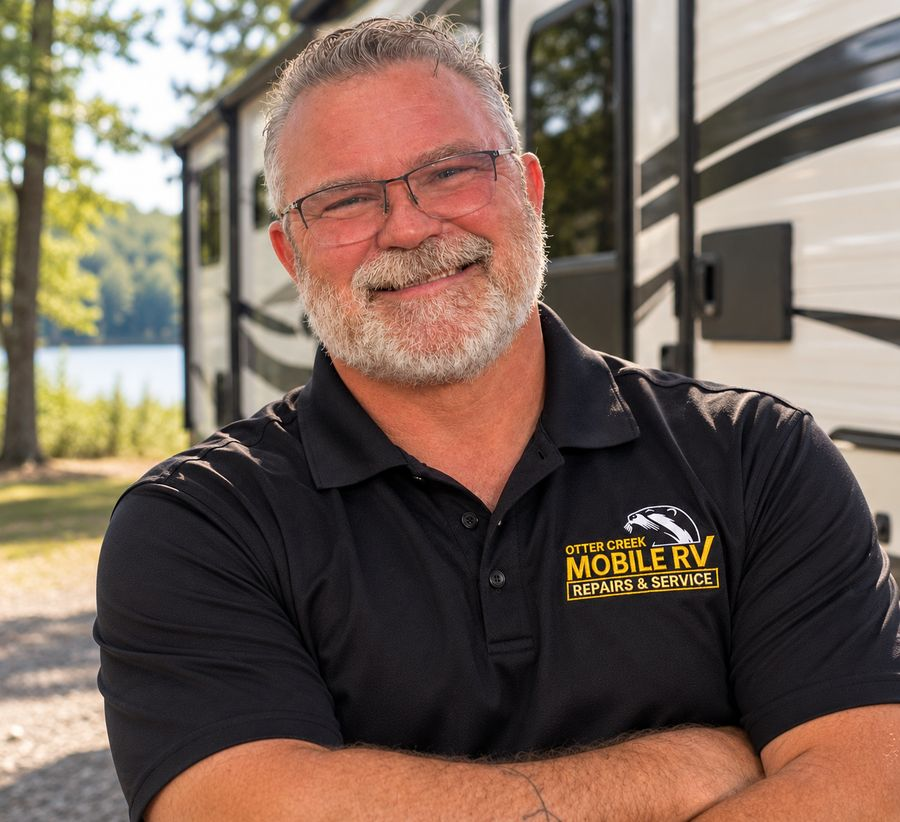
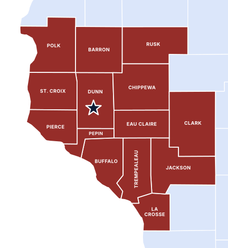

Step 1
Request a Quote
Call or fill out the form. We'll talk through the issue and your location.

Proudly serving Menomonie and nearby towns across Dunn, Eau Claire, Chippewa, Barron, Polk and St. Croix Counties, plus eight more counties in western Wisconsin.
Mobile RV repair
Browse our selection of mobile RV repair services, from diagnostics and appliance and electrical work to plumbing, roof repairs and seasonal maintenance. We come to you, so you skip the tow and the wait. Our goal is to keep pricing clear and the service as simple as possible for your convenience.
(715) 308-1833How it works
Step 1
Call or fill out the form. We'll talk through the issue and your location.
Step 2
Pick a time that works. Campground, driveway or storage lot, we'll meet you there.
Step 3
Diagnosis and repair with a stocked service vehicle. Bigger jobs can move to the shop.
Your technician

Jeremy runs Otter Creek Mobile RV Repairs & Service personally. You get quality workmanship, reliable scheduling and a customer-first approach on every job.
Based in Menomonie, he brings a fully stocked service vehicle to your campsite, driveway or storage lot across western Wisconsin, so you can skip the tow and get back to camping.
Contact JeremyGet started
Tell us what is going on with your RV and where it is parked. We will review it and get back to you with a quote.
Get a QuoteWinterize in the fall and de-winterize in the spring, with inspections at your campsite, driveway or storage lot.
Schedule ServiceBroken down? We offer emergency roadside help when feasible. Call or text and we will tell you what we can do.
Call NowAbout our service
Otter Creek Mobile RV Repairs & Service prides itself on being the one-stop shop for RV owners in Menomonie and across western Wisconsin, including Dunn, Eau Claire, Chippewa, Barron, Polk, St. Croix, Pierce, Pepin, Buffalo, Trempealeau, Jackson, Clark, Rusk and La Crosse counties. Offering a full list of mobile RV repair services, from diagnostics and repair to appliance and electrical work, plumbing and leaks, roof repairs and seasonal maintenance, there is something for every RV owner. Winterizing, de-winterizing and on-site inspections are the services that keep your RV ready for every camping season, all done at your campsite, driveway or storage lot with a fully stocked service vehicle. A flat $120 service visit covers travel and the first hour, each extra hour is $120, and parts are billed separately. To find out more or get your repair scheduled, don’t hesitate to reach out at (715) 308-1833.
Service area
Based in Menomonie. We come to your campsite, driveway or storage lot in these counties. Not sure if you are covered? Call or text us.

Eau Claire, Chippewa, Dunn, Pepin, Pierce, St. Croix, Polk, Barron, Rusk, Clark, Jackson, Buffalo, Trempealeau and La Crosse counties.
Frequently asked questions
Otter Creek Mobile RV Repairs & Service charges a flat $120 service and diagnostic fee that covers travel and the first hour of labor. After that, labor is $120 per hour. Parts and materials are billed separately.
The $120 fee covers your drive-out and the first hour of labor, so we can find the real problem and tell you what it will take to fix it. Labor after the first hour is $120 per hour, and parts are billed separately.
We are based in Menomonie, Wisconsin and travel to RV owners across 14 western Wisconsin counties: Dunn, Eau Claire, Chippewa, Barron, Polk, St. Croix, Pierce, Pepin, Buffalo, Trempealeau, Jackson, Clark, Rusk and La Crosse. Not sure if you are covered? Call or text us and we will tell you.
Yes. We work at campgrounds, storage facilities and home driveways around Menomonie and western Wisconsin, so you do not have to move your RV.
No. Most repairs and diagnostics are done on-site with our fully stocked service vehicle. If a job is too big for the roadside or driveway, it can move to Jeremy's shop.
We handle RV diagnostics and repair, appliance and electrical work such as refrigerators, furnaces, water heaters, converters, batteries and wiring, plumbing problems and leaks, roof repairs and seals, structural fixes, and seasonal maintenance and inspections.
Yes. Seasonal maintenance includes fall winterizing, spring de-winterizing and inspections, done at your campsite, driveway or storage lot.
Yes. We handle roof repairs, seals and leaks, plumbing problems and structural fixes, plus appliance and electrical troubleshooting.
We offer emergency roadside assistance when feasible. Call or text (715) 308-1833 and we will tell you honestly what we can do and when.
Call or text (715) 308-1833, or fill out the quote form on this page. We will talk through the issue and your location, pick a time that works, and meet you where your RV is parked.
Jeremy High, the owner of Otter Creek Mobile RV Repairs & Service, runs the business personally. You get quality workmanship, reliable scheduling and a customer-first approach on every job.